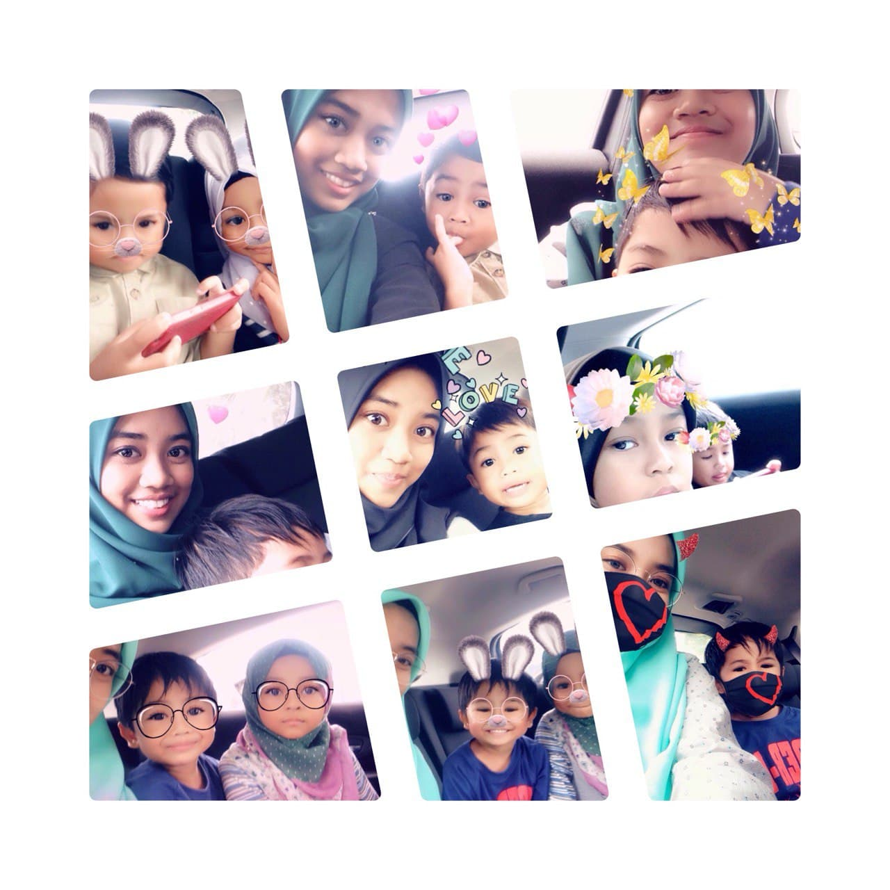
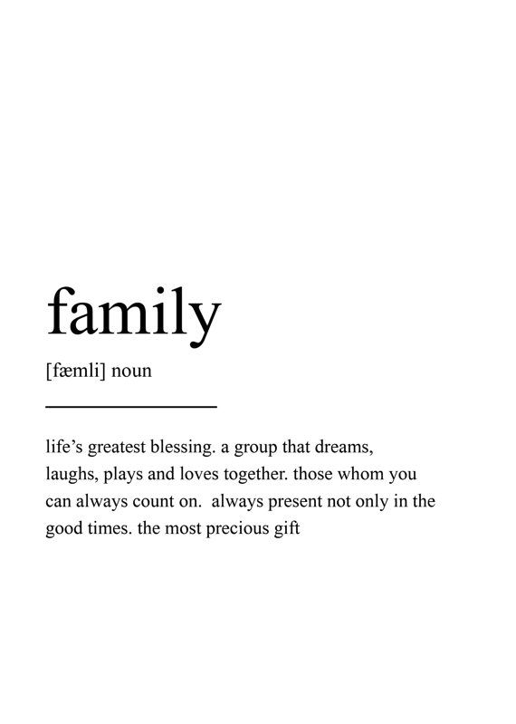
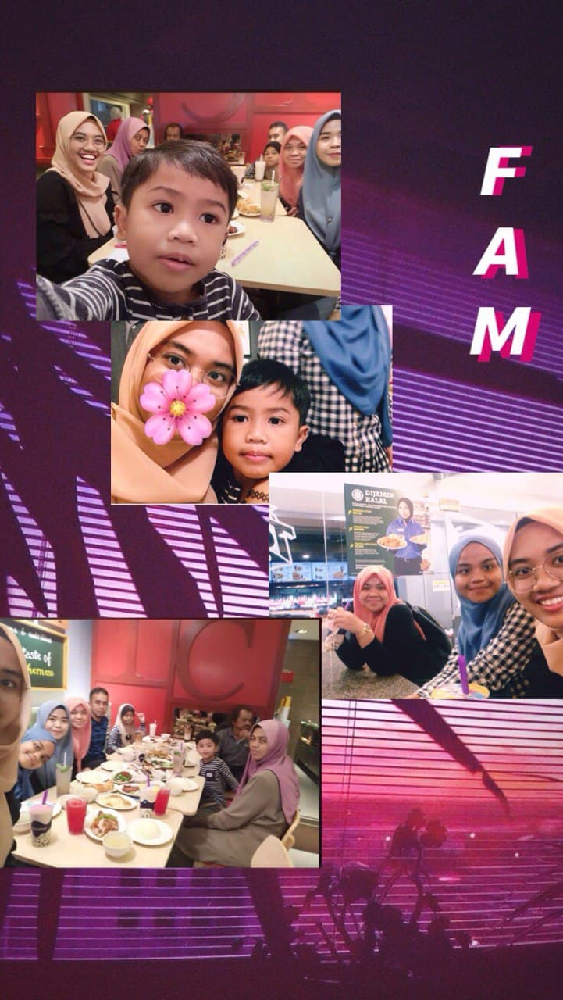
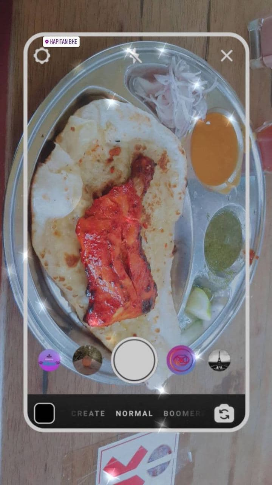
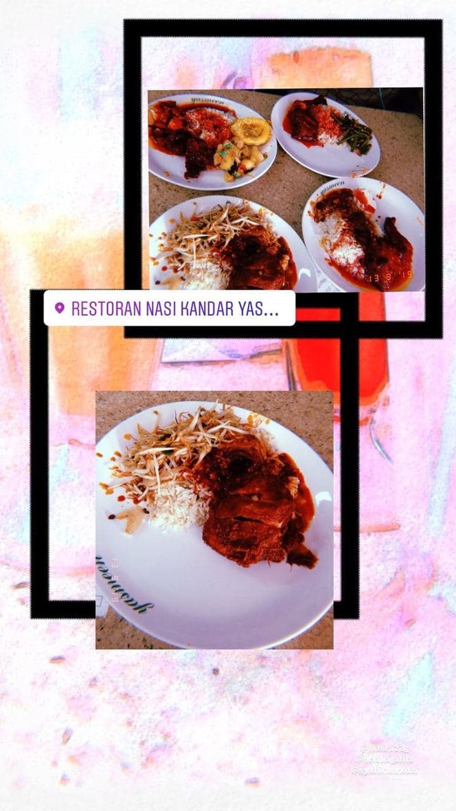
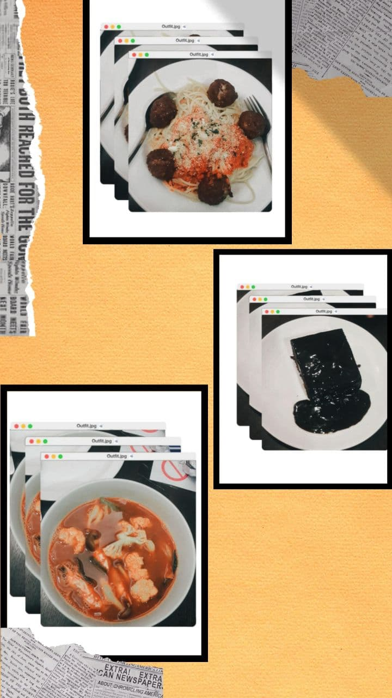
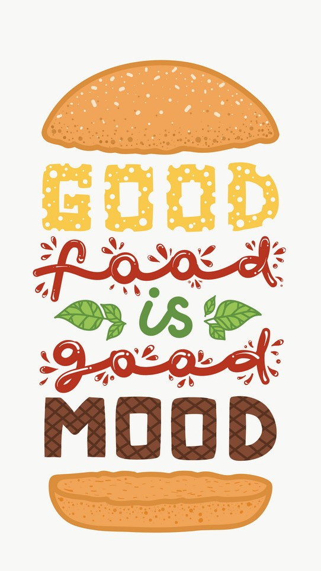
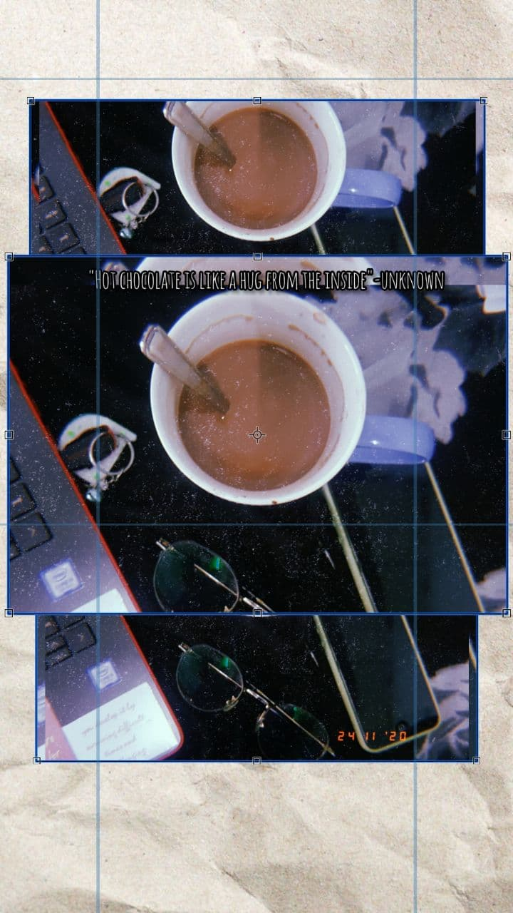
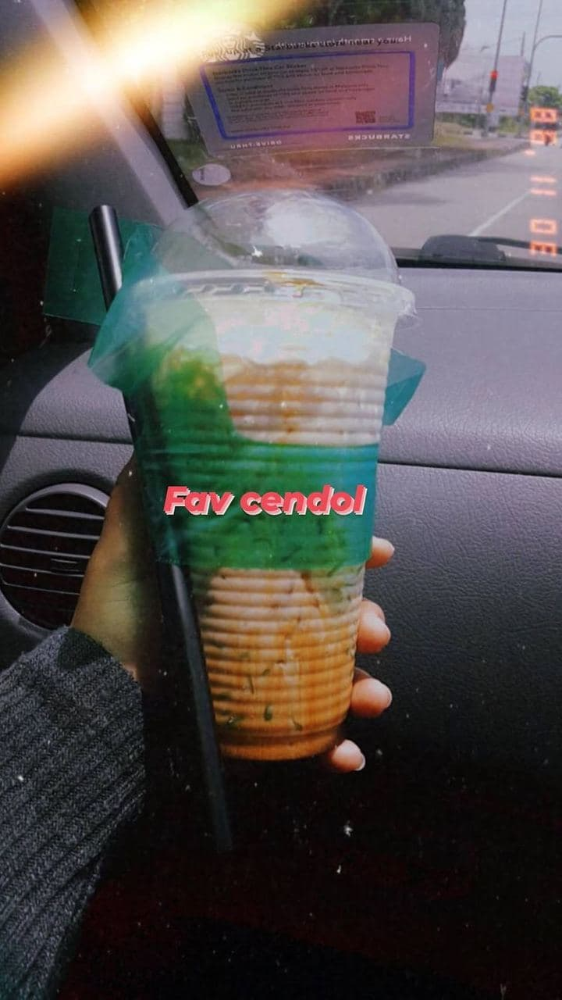
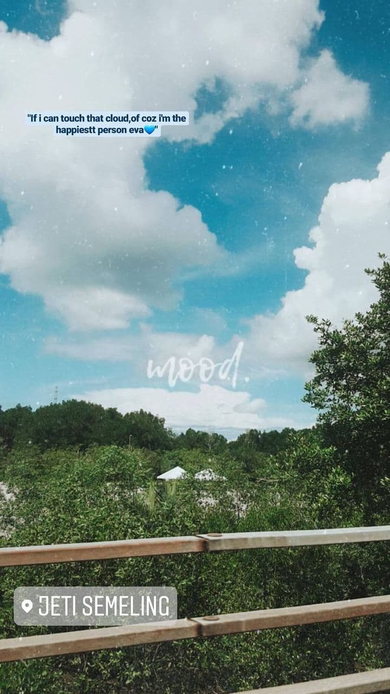

My Biodata
My full name is Nur Hidayah Binti Yusof and I am 20 years old I am from Kulim Kedah, Lives is Lunas,Kedah
My Favourite Person
  My Favourite Food and Drinks
I choose to eat everything for now except for certain seafood like scallop and clam. I love food so much rather than everything else.I enjoying every single day of my food hunting journey:). For some people, food is just a necessity to satisfy basic needs but for me, food is more than just a basic necessity, but a pleasure that plays a significant role in their understanding of happiness.
No matter how much I have eaten, I never fail to make myself feel hungry when I have my favourite foods in front of me. Flavours are felt exploding in my mouth when I take the 1st bite of all the foods. My love for foodie is eternal and nobody on this earth could ever take this from me until I die.
   
Everyone has a favorite beverage and so am I but to choose among all the drinks in the world I would say that is not easy since there are hundreds of drinks out there in the worlds. My favoutite drinks is Hot chocolate and Cendol.The most enjoying drinks while stress is coming.Not meaning to blow my own trumpet too much, but I consider myself something of an expert in the field of hot chocolate, as it has been my obsession since about the age of ten. Although few people believe me when I say this (although some of them do question my sanity) hot chocolate making really is an art form.
 "Hot Chocolate is just like a hug from the inside"-unknown. Hobbies
I love taking photo and making videos.Sometimes, I love to watching dramas or movies. Taking pictures and videos made me realize that time flies too fast.It it because ,when I enjoying recording all the videos and photo all of them will become memories then.All the photo and video is just a pieces of memories that can never be replaced again.When somebody is gone or i cannot visit those places again.I love to play back all the videos and photos to make me happy and sadly to said that it make me miss them more:).
